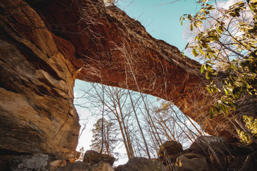

Archways
Introduction
Before going to college, I went on a five day backpacking trip in the wilderness of Kentucky with a group of other freshmen. I had never been on a trip like this before, so it was a fun new adventure! The trip took place in the Red River Gorge.

Packing Light

The first thing we had to do was learn how to pack. We each brought with us a backpack with just the essentials:
- A hammock
- A sleeping bag
- A headlamp
- Deodorant
- Toothbrush and toothpaste
- Rain Jacket
- Tarp and rope
- Water bottle
- Food
There are some supplies that were shared among the group: food, cooking supplies, first aid, etc. We carried everything in hiking backpacks. It ended up not being all that light after all the food...
Feasting in the Forrest

When you're hiking for miles, every meal is delicious! We brought a portable cooking kit, and several supplies we were able to get creative with. We made pancakes, pizza, biscuits, rice and beans. That portable stove was handy! Of course we also had G.O.R.P. (Good Old Raisins & Peanuts) for the trail. For water, we had to use chemicals to purify water from streams. It tastes strange at first, but you get used to it!
Sleeping Out

We all slept in hammocks under tarps. It was actually more comfortable than in the past when I have slept in a tent. Hammocks are more comfy than the ground. Each night we would hoist a bag with all our food up high in a tree to keep the smell of food from attracting bears to our campsite.
"Getting to know you"

Of course our group had to develop a lot of trust with each other. None of each knew each other before the trip, but we sure did after! The group was led by student leaders from the college I went to. On the last day of the trip when we were all exhausted, the leaders surprised us with a special meal.
Conclusion

I have very fond memories from this trip! I ended up going back for two more backpacking trips to the gorge the next two years. I hope to go again sometime.